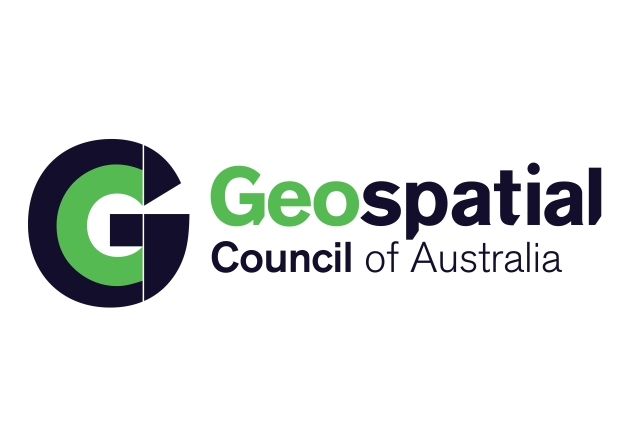

Hi! I'm Harry, an aspiring professional surveyor currently in my fourth year at RMIT, pursuing a Bachelor of Applied Science (Surveying) (Honours). Over the past four years, I’ve gained valuable hands-on experience working as a surveyor alongside my studies. I'm particularly excited about utilising the Robotic Optical Observatory (ROO) for my final year project, which you can see pictured below. Outside of work, I enjoy hiking, scuba diving, and practicing jiu-jitsu!
This geoportfolio showcases my academic achievements, industry experience, and the skills I’ve developed throughout my journey.
Cadastral surveying involves determining and legally documenting land boundaries and property ownership. Survey plans serve as official records, showing precise measurements that future surveyors can rely on. When a lot of land is subdivided, a 'plan of subdivision' is created.
Worksheets are detailed working documents used by surveyors, both in the field and the office, to record raw data, perform calculations, and map out how the title boundary aligns with the property’s fencing.
Below is an example of a mock plan of subdivision I developed using CAD software. Below there is also a hand-drawn worksheet I completed, where I applied Crown land surveying principles to divide the area.
- Mock 'Plan of Subdivision' drafted in CAD software
- Crown Land Surveyors Worksheet
Below are the industry-level survey documents that I have created as part of my course:
My honours project focuses on enhancing the accuracy of the coordinates for the Robotic Optical Observatory (ROO), located atop the 11-storey Building 201 at RMIT.
Previous research has explored factors such as the building’s movement and the camera timing delay between the telescope and the computer system. My objective is to
determine whether refining the coordinates of the ROO will improve its astrometric precision. To achieve this, I plan to conduct a local tie-survey at RMIT’s Bundoora
West Campus, followed by an Invariant-Point (IVP) determination, using methodologies employed by Geoscience Australia for their Satellite Laser Ranging (SLR) telescopes.
I created a poster about my project for a presentation. It outlines my project aim, the supporting literature and the method I will be following. Check it out below!

Industry Experience
This page will outline my experience within the surveying and geospatial industry. I have been working at JCA Land Consultants since starting at RMIT, and I have also
been fortunate to volunteer as a Geospatial Analyst for the Geospatial Council of Australia. The below details will outline my experience in these companies and the
skills I have developed. Through these roles, I have gained hands-on experience in both technical surveying techniques and geospatial data analysis, allowing me to
contribute to a variety of projects across the industry.
JCA Land Consultants
Project Surveyor
July 2020 - Present (as of September 2024)
During my first year at RMIT, I was fortunate to secure a position with JCA Land Consultants, which has greatly complemented my studies, particularly in
cadastral-specific subjects. The job provided me with the opportunity to apply industry knowledge to my university coursework and vice-versa. I began as
a survey assistant, primarily responsible for equipment operation and recording field notes. I became proficient with Leica products and Captivate software,
including the Leica TS16 and TS15 Total Stations, GS18 rover, CS30 tablet, CS20 controller, and BLK360 laser scanner.
After two years in this role, I transitioned to party leader, a position I have held since. My responsibilities include conducting document research,
leading field crews for residential and engineering surveys, operating Leica equipment, processing and analyzing survey data, and using software such as
LisCAD NEO and AutoCAD. I also assist in training staff and oversee the maintenance of equipment and office records. I have thoroughly enjoyed my time at
JCA and remain committed to advancing my career with the goal of becoming a licensed surveyor.
Volunteer Geospatial Analyst

Volunteer Geospatial Analyst - FireWater Map-a-thon
October 2020
I volunteered for the FireWater Map-a-thon, where I contributed to collecting data on static water infrastructure, including dams, water tanks, and swimming pools,
to support bushfire preparedness for the upcoming season. We utilized the OpenStreetMap (OSM) platform and HOT Tasking Manager to coordinate this effort.
The initiative was launched in response to the devastating national bushfires of late 2019-2020. The Surveying & Spatial Science Institute (SSSI), now the
Geospatial Council of Australia, organised a nationwide volunteer network to map damaged infrastructure. In early February 2020, the SSSI National Bushfire
Recovery Map-a-thon attracted over 600 volunteers from more than 25 countries, becoming one of the largest map-a-thon events in the Australasian region.
Collectively, 2,793,879 hectares were mapped, with 15,731 edits, 13,891 building edits, and 1,091 damaged features identified, including 945 damaged buildings.
The data collected provided critical guidance for recovery efforts, supplementing existing authoritative sources where data was lacking.
Skills and Proficiencies
 |
Trimble Business Centre (TBC) |
 |
LisCAD & LisTECH NEO |
 |
Autodesks AutoCAD |
|
ESRI ArcGIS & ArcGIS Pro |
|
Surveying |
 |
Drone Mapping |
 |
GPS & GNSS Technologies |
 |
Python Programming |
Credits and Attributions
The following programming languages and software were used to create the website
- HTML
- CSS
- Visual Studio Basic
The deliverables contains content from the following subjects:
- Cadastral Surveying Practice (GEOM2101)
- Cadastral Surveying Law (GEOM2250)
- Capstone Honours Project (GEOM2410)
As per the policy of using the Flaticons with a free account, the attributions and crediting of the creators of the icons are as below:
Attributions of icons used: